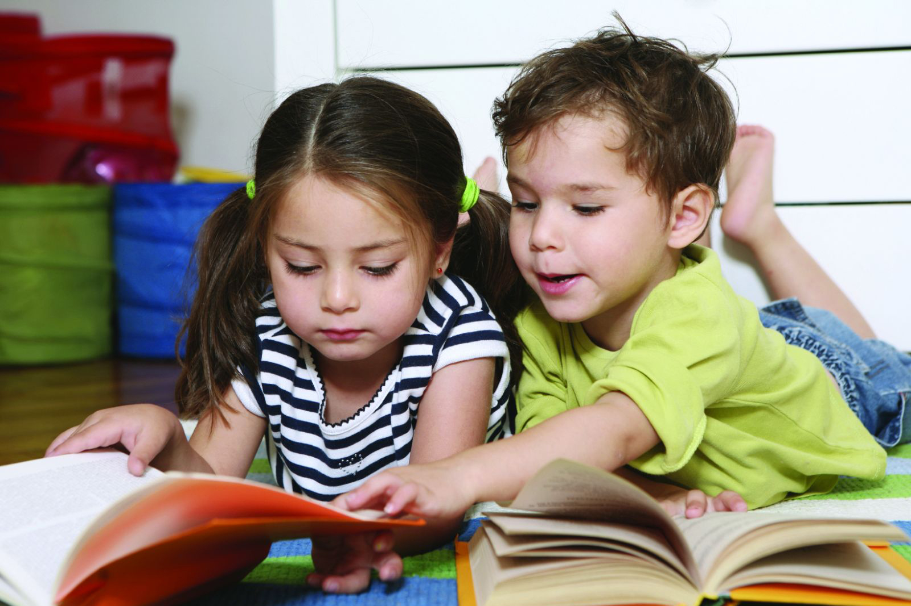
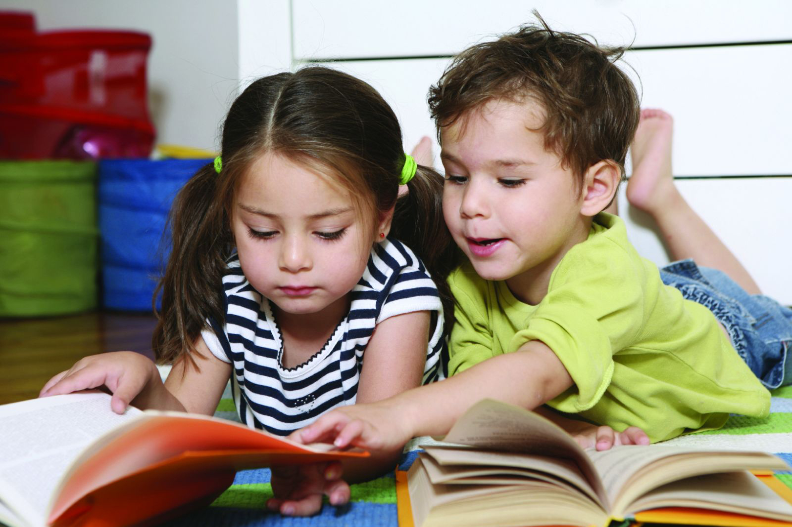

Reading to Kids is a grassroots organization dedicated to inspiring underserved children with a love of reading, thereby enriching their lives and opportunities for success in the future. To this end, Reading to Kids gathers on average 582 children and 304 volunteers at reading clubs on the second Saturday of every month at eight Los Angeles elementary schools.
At the monthly reading clubs, pairs of volunteers read aloud to small groups of children, while their parents receive training on how to encourage their children to read at home. Kids, parents, teachers, and school libraries receive book donations at the end of the reading clubs. These are important donations, as 60 percent of low-income homes do not have age-appropriate reading materials for children.
Since its inception in 1999, Reading to Kids has given 175,805 prize books to children who attend the reading clubs, donated 32,446 hardcover books to school libraries, and our volunteers have spent more than 217,104 hours reading to kids.
 
